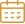

<mat-toolbar color="primary" *ngIf="router.url !== '/'">
    <div class="toolbar-content">

        <button mat-button class="mobile" [matMenuTriggerFor]="beforeMenu"><mat-icon>menu</mat-icon></button>
        <mat-menu #beforeMenu="matMenu" xPosition="after">
            <button mat-menu-item routerLink="/profile">My Profile</button>
            <button mat-menu-item routerLink="/profile/edit">Edit Profile</button>
            <ng-container *ngIf="(user | async) as userV">
                <button mat-menu-item routerLink="/mentor/edit" *ngIf="userV.mentor_account">Edit Mentor Profile</button>
            </ng-container>
            <button mat-menu-item routerLink="/dashboard">My Dashboard</button>
            <ng-container *ngIf="(user | async) as userV">
                <button mat-menu-item routerLink="/dashboard/mentor" *ngIf="userV.mentor_account">My Mentor Dashboard</button>
            </ng-container>
            <button mat-menu-item (click)="auth.logout()">Logout</button>
            <!--      <button mat-menu-item>My Sessions</button>-->
            <!--      <button mat-menu-item>My Calendar</button>-->
            <!--      <button mat-menu-item>My Content</button>-->
            <!--      <button mat-menu-item>Study Material</button>-->
            <ng-container *ngIf="(user | async) as userV">
                <div mat-menu-item *ngIf="!userV.mentor_account">
                    <button mat-flat-button color="accent" routerLink="../../registration/mentor" class="action-button">Become Mentor</button>
                </div>
            </ng-container>
            <!--      <div mat-menu-item>-->
            <!--        <div class="icons">-->
            <!--          -->
            <!--          -->
            <!--          -->
            <!--        </div>-->
            <!--      </div>-->
        </mat-menu>

        <div class="logo">
            <!--      -->
            
        </div>

        <mat-icon class="mobile">search</mat-icon>
        <div class="additional-menu desktop" *ngIf="auth.isLogged$ | async">
            <mat-form-field class="search" (keyup.enter)="router.navigate(['search'],
                  { queryParams: {search: search.value}})" floatLabel='never'>
                <input matInput type="text" placeholder="Search" #search>
                <mat-icon matPrefix>search</mat-icon>
            </mat-form-field>
            <ng-container *ngIf="(user | async) as userV">
                <button mat-flat-button color="accent" *ngIf="!userV.mentor_account" routerLink="../../registration/mentor" class="action-button">Become Mentor</button>
            </ng-container>
            <!--      <div class="icons">-->
            <!--        -->
            <!--        -->
            <!--        -->
            <!--      </div>-->

            <ng-container *ngIf="(user | async) as userV">
                <ng-container *ngIf="userV.avatar; else defaultAvatar">
                    
                </ng-container>
                <ng-template #defaultAvatar>
                    
                </ng-template>
            </ng-container>
            <mat-menu #afterMenu="matMenu" xPosition="before">
                <button mat-menu-item routerLink="/profile">My Profile</button>
                <button mat-menu-item routerLink="/profile/edit">Edit Profile</button>
                <ng-container *ngIf="(user | async) as userV">
                    <button mat-menu-item routerLink="/mentor/edit" *ngIf="userV.mentor_account">Edit Mentor Profile</button>
                </ng-container>
                <button mat-menu-item routerLink="/dashboard">My Dashboard</button>
                <ng-container *ngIf="(user | async) as userV">
                    <button mat-menu-item routerLink="/dashboard/mentor" *ngIf="userV.mentor_account">My Mentor Dashboard</button>
                </ng-container>
                <button mat-menu-item (click)="auth.logout()">Logout</button>
            </mat-menu>
        </div>
    </div>
</mat-toolbar>